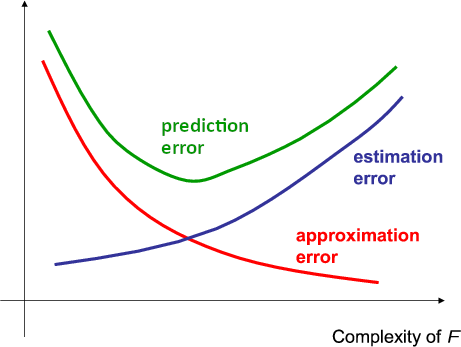
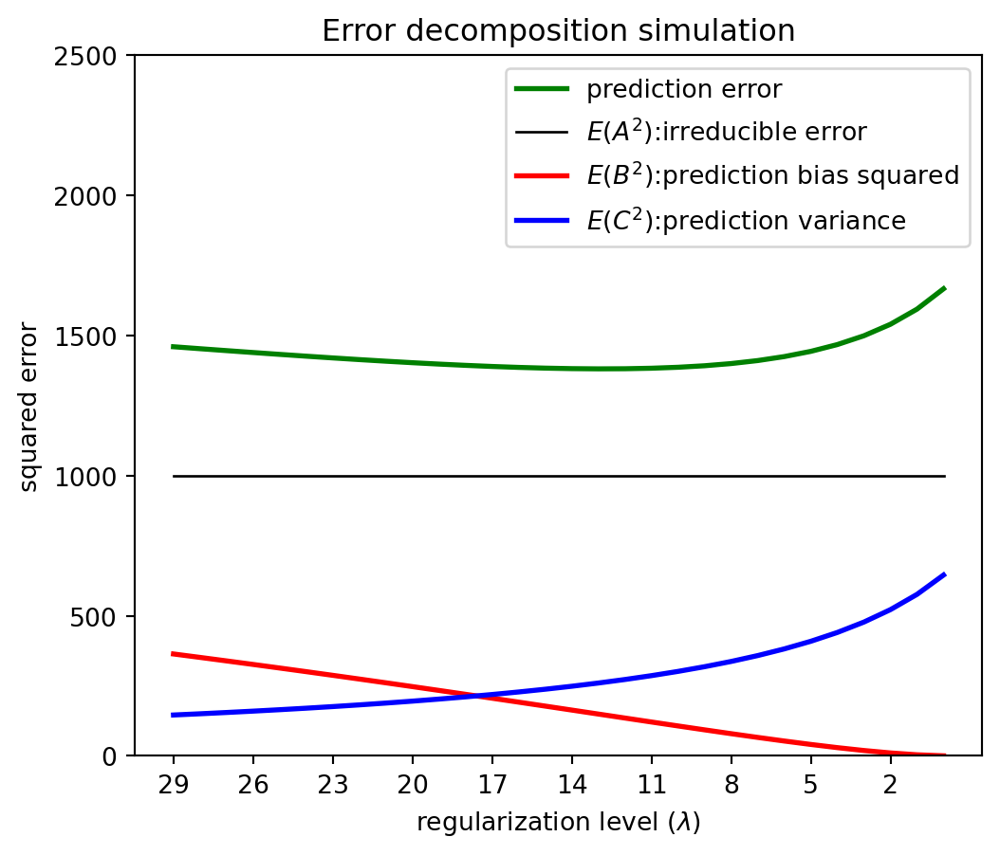

ntr = 50
p = 20
sigma_sq = 1000
n_iter = 1000
beta = np.sqrt(np.array(range(20, 0, -1)) / 2)
yhat_0 = np.zeros((20, n_iter))
err = np.zeros((20, n_iter))
for iteration in range(n_iter):
X = np.random.normal(loc=0.0, scale=1.0, size=(ntr, p))
Y = X @ beta + np.random.normal(loc=0.0, scale=np.sqrt(sigma_sq), size=ntr)
y0 = np.sum(beta) + np.random.normal(loc=0.0, scale=np.sqrt(sigma_sq), size=1)
for pnow in range(1, p + 1):
betahat = np.linalg.inv(X[:, :pnow].T @ X[:, :pnow]) @ X[:, :pnow].T @ Y
yhat_0[pnow - 1, iteration] = np.sum(betahat)
err[pnow - 1, iteration] = y0 - np.sum(betahat)
pred_err = np.mean(err**2, axis=1) # pred-error
pred_bias = (np.mean(yhat_0, axis=1) - np.sum(beta))**2 # E(B^2)
pred_var = np.var(yhat_0, axis=1) # E(C^2)Introduction to Data Science
Predictive Modeling Theory - Class 14
Giora Simchoni
gsimchoni@gmail.com and add #intro2ds in subject
Stat. and OR Department, TAU
Predictive Modeling So Far
What we have learned
Want to model and predict \(y\) as function of \(x\): regression or classification
Using training data \(Tr\) to learn model, test data \(Te\) to evaluate model and emulate actual prediction
Traditional parametric models: OLS regression, logistic regression
Non-parametric models based on neighborhoods: Nearest neighbors, trees
Modern methods based on trees: Random Forest and Boosting
Neural nets and DL (specifically CNN)
Model complexity or flexibility
- Many of the models we have learned have a complexity parameter
- OLS/logistic: \(p\), number of variables in \(x\)
- k-NN: number of neighbors \(k\)
- Trees: depth of tree \(d\)
- Neural nets: number of edges in \(W\)
- More complex models are more flexible and “rich”
Model complexity or flexibility
- Typical behavior we have seen: as complexity increases, training error decreases, test/prediction error has U-shape:
- Optimal complexity: flexible enough to capture relevant information, not too flexible to cause overfitting
Estimation and Approximation Errors
Intuition: Estimation and approximation errors
Approximation error: how well our model can capture the “true” dependence of \(y\) on \(x\)
Estimation error: how well can we estimate our model from our training data \(Tr\)
Simple (low-complexity) model: high approximation error, low estimation error
Complex model: low approximation error, high estimation error

The Bias Variance Tradeoff
Squared error decomposition
For regression, take the standard model: \(y = f(x) + \epsilon\;,\;\epsilon \sim (0,\sigma^2)\)
Modeling approach (e.g. OLS), given training data \(Tr\), gives model \(\hat{f}(x)\)
- Assume want to predict at new point \(x_0\), and understand our expected (squared) prediction error:
\(\mathbb{E}(y_0 - \hat{f}(x_0))^2 = \mathbb{E} \left( \underbrace{\left(y_0 - f(x_0)\right)}_{A} + \underbrace{\left(f(x_0) - \mathbb{E} (\hat{f}(x_0))\right)}_{B} + \underbrace{\left(\mathbb{E} (\hat{f}(x_0)) - \hat{f}(x_0)\right)}_{C}\right)^2\)
- Note we treat both the training data \(Tr\) (and hence \(\hat{f}\)) and the response \(y_0\) as random variables in our expectations
Which factors are random variables, dependent on \(Tr\)
\(\mathbb{E}(y_0 - \hat{f}(x_0))^2 = \mathbb{E} \left( \underbrace{\left(y_0 - f(x_0)\right)}_{A} + \underbrace{\left(f(x_0) - \mathbb{E} (\hat{f}(x_0))\right)}_{B} + \underbrace{\left(\mathbb{E} (\hat{f}(x_0)) - \hat{f}(x_0)\right)}_{C}\right)^2\)
\[A = y_0 - f(x_0)\]
\[B = f(x_0) - \mathbb{E} (\hat{f}(x_0))\]
\[C = \mathbb{E} (\hat{f}(x_0)) - \hat{f}(x_0)\]
The bias-variance decomposition
\(\mathbb{E} \left( \underbrace{\left(y_0 - f(x_0)\right)}_{A} + \underbrace{\left(f(x_0) - \mathbb{E} (\hat{f}(x_0))\right)}_{B} + \underbrace{\left(\mathbb{E} (\hat{f}(x_0)) - \hat{f}(x_0)\right)}_{C}\right)^2 =\)
\(\;\;\;\;\;\;\;\;\;\;\;= \mathbb{E} A^2 + B^2 + \mathbb{E} C^2 + 2 B \cdot \mathbb{E} A + 2 \mathbb{E} (AC) + 2B \cdot\mathbb{E} C\)
\(\mathbb{E}(A^2) = \sigma^2\) the Irreducible error of a perfect model which knows the true \(f\)
\(B^2 = \left(f(x_0) - \mathbb{E} (\hat{f}(x_0))\right)^2\) is the squared bias — a measure of approximation error (note \(B\) is not a random variable)
\(\mathbb{E}(C^2) = \mathbb{E} \left(\mathbb{E} (\hat{f}(x_0)) - \hat{f}(x_0) \right)^2\) is the variance of the prediction — a measure of estimation error
\(B \cdot\mathbb{E} A = \mathbb{E} (AC) = B \cdot \mathbb{E} C = 0\) due to independence and mean-0 relations
The bias-variance decomposition
\[\mathbb{E}(y_0 - \hat{f}(x_0))^2 = \text{irreducible error} + \text{squared bias} + \text{variance}\]
And what was wrong with this pattern?
Using the bias-variance decomposition
Our general intuition: as complexity increases, approximation error decreases and estimation error increases
For many models we can calculate and show these effects on the bias and variance of the model
- For example, for OLS regression, we can prove:
- That the squared bias decreases when we add more variables into the model
- That the variance of prediction increases when we add more variables (and calculate it, under some assumptions)
- Similarly for k-NN regression the squared bias decreases and the variance increases as we decrease \(k\) (fewer neighbors, more flexibility/complexity)
Simulation example: bias, variance and prediction error
Let’s generate data according to the following model: \(x \in \mathbb R^{20}\) has multivariate normal distribution, \(y = \sum_{j=1}^{20} \sqrt{(21-j)/2} \times x_j + \epsilon\;,\;\epsilon \sim N(0, 1000)\)
So the true model is in fact linear with \(\beta = (\sqrt{10},\sqrt{9.5},\dots,\sqrt{0.5})^t\)
We have \(n=50\) training observations, and want to predict at \(x_0 = (1,1,\dots,1)^t\; \Rightarrow\; y_0 = 43.6 + \epsilon\)
By generating many training sets and \(\hat{f}\)’s we can evaluate bias, variance and prediction error
Complexity parameter: number of variables included in the model (only the first coordinate, first two, …)
plt.plot(range(1, p + 1), pred_err, color='green', lw=2, label='prediction error' )
plt.plot([1, p + 1], [sigma_sq, sigma_sq], color='black', lw=1, label='$E(A^2)$:irreducible error')
plt.plot(range(1, p + 1), pred_bias, color='red', lw=2, label='$E(B^2)$:prediction bias squared')
plt.plot(range(1, p + 1), pred_var, color='blue', lw=2, label='$E(C^2)$:prediction variance')
plt.xlabel('dimension')
plt.ylabel('squared error')
plt.title('Error decomposition simulation')
plt.legend(loc="upper right")
plt.show()
Complexity parameters in our models
| Method | Complexity param(s) | Low Complexity | High Complexity |
|---|---|---|---|
| Linear/logistic regression | Number of variables | Few variables | Many variables |
| k-NN | Number of neighbors | Many neighbors | Few neighbors |
| Tree | Depth | Shallow | Deep |
| Neural Nets | Number of hidden nodes and layers | Few | Many |
Cross validation
Cross validation: beyond the test set
So far we simply divided our data to 80% training and 20% test
We mentioned that if we also have to choose a model parameter (like number of variables or \(k\) in \(k\)-NN), we should have training-validation-test (usually 60-20-20), where we use validation to select model, and test for final evaluation
But there are more efficient ways to use the data
10-fold cross validation
- Divide the data into 10 equal size parts (folds)
- Repeat 10 times:
- Fit the model on 90% of the data
- Apply the model to the holdout fold
- Evaluate the modeling approach on 100% of the data by combining the holdout folds
Once the complexity parameter has been chosen, train the model one last time on the entire data before testing it in production on actual unseen data.
Leave-one-out cross validation (LOOCV)
Can go beyond 10-fold, to n-fold: each time fit the model on \(n - 1\) observations, and hold-out \(1\)
In mathematical notation: \(L_{n-fold} = \sum_{i=1}^n L\left(y_i, \hat{f}^{(-i)}(x_i)\right)\)
Where:
- \(L\) is the loss function we use for evaluation
- \(\hat{f}^{(-i)}\) is the model we build on \(n-1\) observations, removing observation \(i\)
- We then apply this model to the left out observation and see how well we do
Cross validation: advantages and issues
Advantages:
- Training set is bigger (\(0.9n\) or \(n-1\) instead of \(0.8n\)) — better models and more realistic
- Test set is bigger (essentially of size \(n\)) — more stable model evaluation and selection
Disadvantages:
- Have to build 10 (or \(n\)) models — much more computing
- What exactly are we evaluating — we don’t have a single model
Lots of interesting perspectives and results
Regularization
Regularization: controlling the bias-variance tradeoff
As we saw, in OLS, the more variables in the model, the bigger the prediction variance
This is because we have to estimate many parameters, high model complexity
Regularization controls model complexity not by reducing the number of parameters, but in other ways
Most common: restrict the norm of \(\hat{\beta}\), instead of allowing it to take any value in \(\mathbb R^p\)
Norm penalties and ridge regression
The common norms to penalize:
- Euclidean (\(\ell_2\)) norm: \(\|\beta\|_2^2 = \sum_{j=1}^p \beta_j^2\;\;\) \(\;\Rightarrow\;\;\) Ridge regression
- \(\ell_1\) norm: \(\|\beta\|_1 = \sum_{j=1}^p |\beta_j|\;\;\) \(\;\Rightarrow\;\;\) Lasso
For ridge regression, \(\hat{\beta}\) is the solution of: \(\min_{\|\beta\|^2\leq c} RSS (\beta)\)
Alternative Largrange form: \(\min_\beta RSS(\beta) + \lambda \|\beta\|^2\)
Solving ridge regression
We want to minimize penalized RSS: \(PRSS(\beta) = \|Y-X\beta\|^2 + \lambda \|\beta\|^2.\)
Differentiating relative to \(\beta\) and equating to \(0\) : \(\nabla_\beta PRSS(\beta) = -2X^TY + 2X^TX\beta + 2\lambda \beta = 0.\)
Solution: \(\hat{\beta}(\lambda) = (X^TX + \lambda I_p)^{-1} X^T Y.\)
This is a minimum because the function is quadratic in \(\beta\) (or can check Hessian)
Similar to OLS solution, with additional term in the inverse
ntr = 50
p = 20
sigma_sq = 1000
n_iter = 1000
beta = np.sqrt(np.array(range(20, 0, -1))/2)
yhat_0 = np.zeros((30, n_iter))
err = np.zeros((30, n_iter))
for iteration in range(n_iter):
X = np.random.normal(loc=0.0, scale=1.0, size=(ntr, p))
Y = X @ beta + np.random.normal(loc=0.0, scale=np.sqrt(sigma_sq), size=ntr)
y0 = np.sum(beta) + np.random.normal(loc=0.0, scale=np.sqrt(sigma_sq), size=1)
for lamb in range(29, -1, -1):
betahat = np.linalg.inv(X.T @ X + lamb * np.identity(p)) @ X.T @ Y
yhat_0[lamb, iteration] = np.sum(betahat)
err[lamb, iteration] = y0 - np.sum(betahat)
pred_err = np.mean(err**2, axis=1)
pred_var = np.var(yhat_0, axis=1)
pred_bias = (np.mean(yhat_0, axis=1) - np.sum(beta))**2plt.plot(range(29, -1, -1), pred_err, color='green', lw=2, label='prediction error' )
plt.plot([29, 0], [sigma_sq, sigma_sq], color='black', lw=1, label='$E(A^2)$:irreducible error')
plt.plot(range(29, -1, -1), pred_bias, color='red', lw=2, label='$E(B^2)$:prediction bias squared')
plt.plot(range(29, -1, -1), pred_var, color='blue', lw=2, label='$E(C^2)$:prediction variance')
plt.xlabel('regularization level ($\lambda$)')
plt.ylabel('squared error')
plt.title('Error decomposition simulation')
plt.legend(loc="upper right")
plt.show()
Summary
We have discussed several types of modeling families:
- Parametric traditional approaches like OLS and logistic regression
- Local non-parametric approaches like k-NN and trees
- Modern high dimensional approaches: RF, boosting, CNN
Summary (II)
When designing a specific predictive model we should consider the apsects we have discussed:
- What probabilistic or parametric assumptions make sense?
- What is the right model complexity given the amount of data we have?
- We can control complexity and hence approximation-estimation tradeoff through number of parameters or regularization
- Evaluation on independent data: What is the loss function to evaluate model performance? Use test set or cross validation?
These universal considerations are largely common to all approaches